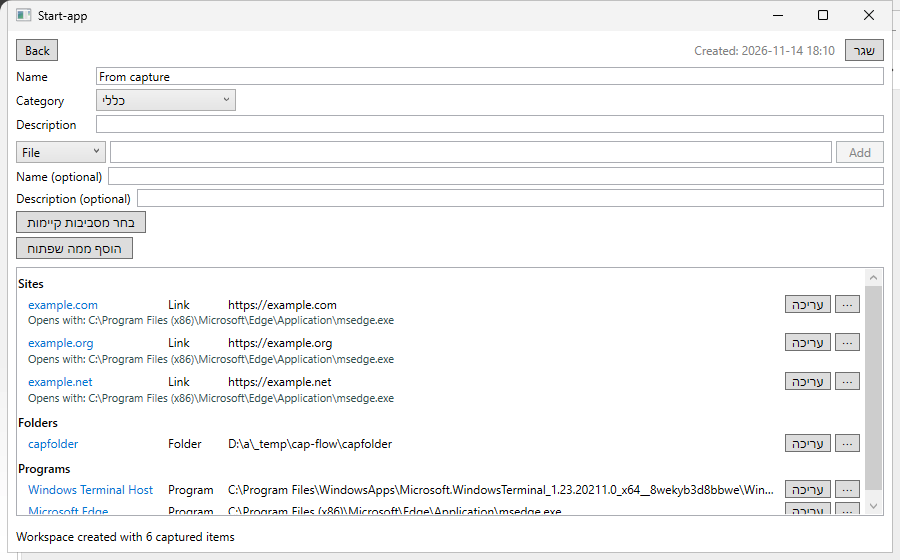

Guide d'utilisation
guide Start-app
Pas à pas : création d'un espace de travail, ajout d'éléments, capture, lancement et sauvegarde - avec de vraies captures d'écran de l'application et avec les limitations qu'il est important de connaître.
Un prototype d'évaluation, pas une version stable
Aucun épisode trouvé. Essayez un autre mot ou effacez la recherche.
qu'est-ce que c'est Start-app
Start-app Enregistre les programmes, dossiers, fichiers et liens sous un seul nom d'environnement. La prochaine fois que vous ouvrirez l'ordinateur, la commande "Exécuter" ouvrira tous les éléments ensemble, sans les sélectionner à nouveau.
Ce guide accompagne tout le parcours : l'écran principal, la création d'un environnement, l'ajout d'éléments manuellement ou par capture, édition, lancement et sauvegarde. chapitre Limites connues Centralisez en un seul endroit tout ce que l’application ne fait pas.
Exigences du système et de l'installation
La cible du packaging est Windows x64. Il n’existe pas de version Mac ou Linux vérifiée.
La disponibilité du téléchargement est affichée sur la page d'accueil Et mis à jour automatiquement : lorsqu'il existe une version prototype vérifiée, il existe un lien de téléchargement, ainsi que le numéro de version, la taille du fichier et son sha256 pour vérification avant l'installation.
Une version téléchargeable ne peut pas être vérifiée pour le moment. Le téléchargement reste désactivé.
détails techniques
Activation après téléchargement
Le téléchargement est un fichier ZIP, pas un programme d'installation. Après téléchargement :
- Extrayez tous les fichiers du ZIP dans un dossier.
- Ouvrez le dossier extrait et exécutez le
StartApp.App.exe. - Laissez la DLL et les fichiers d'exécution dans le dossier, à côté du fichier.
L'application inclut son environnement d'exécution, il n'est donc pas nécessaire d'installer .NET séparément. Aucune inscription, compte ou connexion. Les données sont enregistrées dans un fichier local dans%LOCALAPPDATA%\StartApp\store.json.
Ce qui a été testé : ce prototype a été construit en tant qu'application Windows x64 autonome, et a démarré et arrêté avec succès sur un serveur Windows Server 2025 hébergé. Non testé indépendamment sur Windows 11 domestique, et il n’y a pas d’engagement minimum de version Windows. Il n'y a aucune garantie que les avertissements de sécurité ou les alertes du logiciel antivirus n'apparaîtront pas.
L'écran principal : la vue environnement
La liste des environnements se trouve en haut de l'écran. Chaque carte affiche le nom, la description, la catégorie, la couleur et l'image choisies, la date de création et la dernière ouverture. La date de dernière ouverture est mise à jour au lancement d'un environnement, et non à l'ouverture d'un élément individuel.
Chaque carte possède un bouton « Lancer » et un menu « ... » proposant des actions supplémentaires. Sous la liste se trouve un formulaire de création d’un nouvel environnement. Un accès à l’écran de capture se trouve dans le coin.

Créer un nouvel environnement de travail
Dans le formulaire de création, le nom est obligatoire. La catégorie par défaut est « Général » et vous pouvez choisir une couleur et une image pour la carte. La description est facultative. Après l’enregistrement, un message confirme que les informations ont été enregistrées.

Si vous essayez de lancer un environnement qui ne contient pas encore d'éléments, un message apparaît vous dirigeant vers les détails de l'environnement pour ajouter des éléments.

Ajouter des éléments manuellement
Dans l'écran des détails de l'environnement, ajoutez des éléments de quatre types : site, fichier, dossier et logiciel. Chaque article peut recevoir votre propre nom et description. Les chemins locaux nécessitent un chemin Windows complet, et non un court alias logiciel.

Les éléments sont regroupés à l'écran par type : sites Web, dossiers, fichiers et logiciels. Chaque ligne possède un bouton d'édition et un menu d'action.

Capture : numérisation, sélection et duplication
La capture analyse ce qui est actuellement ouvert : les programmes et l'Explorateur de fichiers Windows, ainsi que dans le navigateur, la barre d'adresse. La source du navigateur connaît Chrome, Edge et Brave ; Il n'existe actuellement aucune matrice de compatibilité complète pour chaque navigateur et version. L'analyse peut prendre jusqu'à 10 secondes.
Les résultats sont affichés pour la sélection avant d'être enregistrés. Vous pouvez créer un nouvel environnement à partir d'eux ou les ajouter à un environnement existant - avec une recherche qui le localise.

Lors de la création d'un nouvel environnement, les éléments sont cochés par défaut. Lors de l'ajout à un environnement existant : sans marquage, l'action est "Tout ajouter" et avec des marquages - "Ajouter la sélection". Les duplications par rapport à ce qui est déjà enregistré dans l'environnement nécessitent une approbation. Les ajouts d’écrans côte à côte restent temporaires jusqu’à ce que vous cliquiez sur Enregistrer.

Un site capturé enregistre également le navigateur à partir duquel il a été trouvé, lorsqu'il peut être identifié.

Modification de l'environnement et des éléments
Le menu "..." d'une carte d'environnement propose : Afficher, Lancer, Ajouter un élément, Formater la carte et Modifier la catégorie.

Lors de la conception d'une carte, choisissez une couleur et une image d'arrière-plan. Pour chaque élément, vous pouvez modifier le nom, la description et l'adresse, copier une adresse, la déplacer dans la liste ou la supprimer de l'environnement actuel. "Ouvrir en utilisant" est enregistré dans l'élément à l'intérieur Start-app uniquement, sans modifier les associations par défaut dans Windows.

Quitter l'édition avec des modifications non enregistrées ouvre un avertissement : enregistrez et quittez, quittez sans enregistrer ou revenez à l'édition.

Environnement de lancement et tests avant ouverture
La commande "Exécuter" vérifie les éléments avant de les ouvrir et sépare les éléments prêts, manquants, non pris en charge, indisponibles ou nécessitant une décision. Les points qui nécessitent une décision ne font pas l’objet d’un contournement général. Les liens s'ouvrent uniquement en http/https et le logiciel nécessite un chemin complet.

Après confirmation, l'application envoie à Windows une demande d'ouverture de chaque élément. Il est important de comprendre ce que cela signifie : une requête envoyée ne constitue pas la preuve que la fenêtre souhaitée s'est réellement ouverte. L'application ne peut pas non plus déterminer de manière fiable si l'élément exact est déjà ouvert. La réouverture peut donc créer des doublons. Un élément dont le fichier est introuvable échoue avec un message « fichier introuvable ».
Limites connues
- Il n'y a pas d'identification automatique du document ouvert dans le logiciel ; Un logiciel ouvert ne constitue pas la preuve d'un fichier particulier qui y est ouvert. Les documents sont ajoutés manuellement.
- Il n'y a aucune garantie de récupération du contenu non enregistré ou de placement de la fenêtre.
- « déjà ouvert » n'est pas connu de manière fiable ; La réouverture peut créer des doublons.
- La capture peut basculer ouvertement entre les onglets pour lire les adresses.
- Un résultat de capture partiel ou une liste vide ne signifie pas qu'il n'y a rien d'ouvert.
- Il n'y a pas d'opération de suppression d'environnement dans l'interface ; Vous pouvez supprimer des éléments d'un environnement, mais pas supprimer un environnement entier.
- « Partager vers un autre environnement » peut apparaître mais est inactif.
Sauvegarde et stockage local
Les espaces de travail sont enregistrés dans un fichier local sur l'ordinateur : %LOCALAPPDATA%\StartApp\store.json. Les modifications ne sont enregistrées que lorsque vous cliquez explicitement sur Enregistrer.
La confidentialité en quelques mots
Les données des environnements sont enregistrées localement sur l'ordinateur. L'ouverture d'un lien ou d'un logiciel crée la communication habituelle de cette destination - par exemple, l'ouverture d'un site Web dans un navigateur mène à ce site Web.
Ce site lui-même n'inclut pas de formulaires, d'analyses, de polices distantes ou de services tiers.
questions fréquemment posées
quoi Start-app faire?
Enregistre les programmes, dossiers, fichiers et liens sous un seul nom d'environnement et les ouvre tous ensemble avec la commande "Exécuter".
Est-ce que tout sera de retour exactement comme avant ?
Non garanti. Il n'y a pas de capture automatique des documents ouverts dans les programmes, de récupération du contenu non enregistré ou de promesse de placement de fenêtre. L'ouverture est une demande adressée au système d'exploitation, avec vérifications et rapports préliminaires.
Comment ajouter un document ouvert dans un logiciel ?
Manuellement : ajoutez le fichier lui-même en tant qu'élément de type de fichier dans les détails de l'environnement. La capture ne le reconnaît pas toute seule depuis le logiciel ouvert.
Où sont stockées les informations ?
dans un fichier local sur l'ordinateur. Détails dans le chapitre Sauvegarde et stockage local.